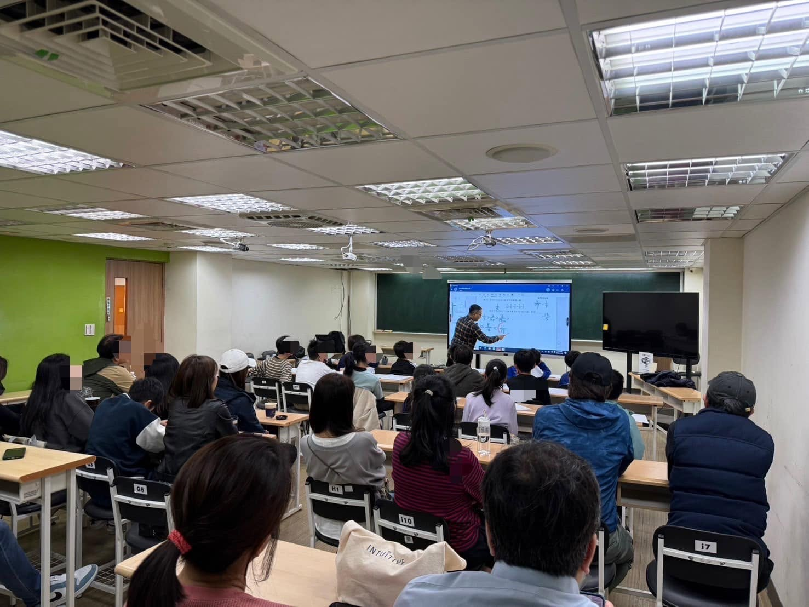

獵豹博士幫小學生上數學課～學生一杯水，老師一池水
昨天獵豹應台北民生國小資優班的幾位有組小班意願的家長之邀，為十多位孩子與家長舉辦的一場精彩的試聽課，主講者是獵豹的青勻博士。
一個普遍存在的迷思：完美的小學數學啟蒙教育是找個經驗豐富、緊迫釘人的教師，再搭配密集的刷題、機械式的訓練。
獵豹的小學資優課程卻首要強調「專業」與「高度」‼️
在獵豹擔綱小學課程（PK/PI,獵豹實體課,現場小班）的都是學養深厚，教學經驗豐富，對國高中課程也全面熟悉的老師。
此次試聽課程的講師青昀博士，是台大數學博士，他是微分幾何/廣義相對論/量子運算的學者，指導過的學生曾獲IMO金牌、IPhO金牌（後錄取MIT）…。
真正優良的小學數學啟蒙教育，需要潛移默化的將推理方法、專家模式、科學方法植入孩子正在發育的大腦，讓他們能學習數學家的思維方式‼️
再者，其實許多小學課程內容可以連結許多「高觀點」的數學知識，例如常見的一道「單位分數」：將一個有理數表為不同單位分數之和。
這問題可以用簡單的拆分入手，再連結到不同層次的專題：greedy algorithm貪婪法則、貝祖等式的Golomb算法、二進制binary、Engel展開式以及連分數。
獵豹秉持的信念是：「學生一杯水，老師一池水」。
宗翰老師在許多次的直播演講中以音樂的學習為例，國內幾位蜚聲國際的中生代知名小提琴家的啟蒙老師都是出自李淑德教授門下，而現今華人最著名的鋼琴家郎朗三歲半開始學琴，他父親也是找當時瀋陽最好的老師（瀋陽音樂學院鋼琴系主任的朱雅芬教授）。
他們有遠見與品味的家長明白 ：啟蒙教育影響深遠‼️
